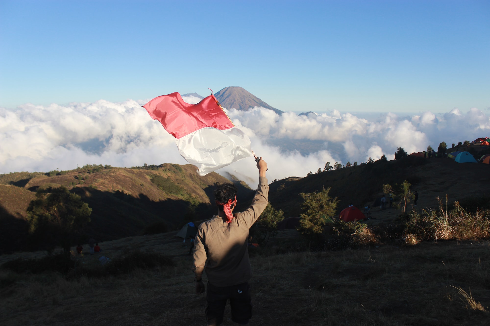
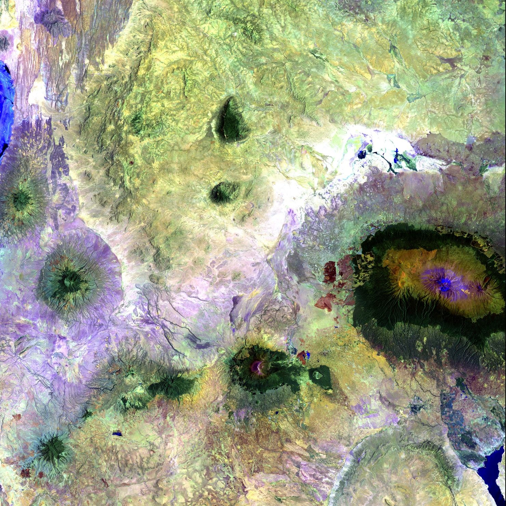
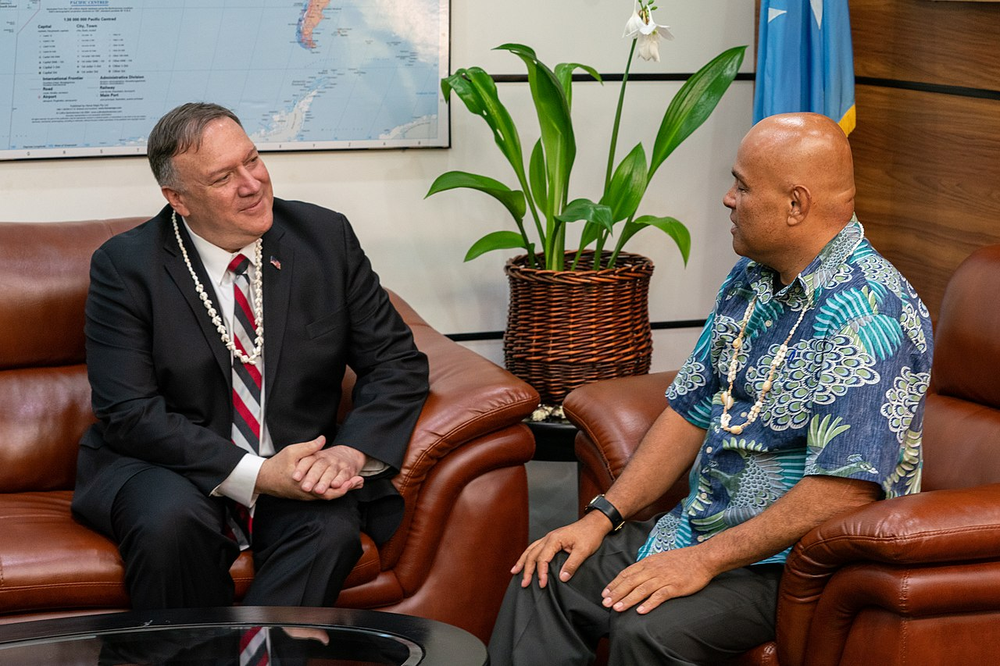

My featured writings on data, sports, and international relations.
Taking a look at some of the numbers that explain "The Game," the historic college football rivalry between Harvard and Yale.
What do statistical methods tell us about the different types of running backs in the NFL today? And how do these players morph over time?
Pita Limjaroenrat was the Prime Ministerial candidate for the Move Forward Party in Thailand's May 2023 elections. Under Pita, Move Forward captured the majority of seats.
Fernando Travesí is the Executive Director of the International Center for Transitional Justice (ICTJ). He has over 20 years of international experience in transitional justice.
Marko Milanovic is Professor of Public International Law at the University of Reading School of Law and co-general editor of the Tallinn Manual 3.0 project.
Dr. X̱'unei Lance Twitchell is a Professor of Alaska Native Languages at the University of Alaska Southeast and a multimedia artist.
An interview with Simon Kofe, the Minister of Justice, Communications and Foreign Affairs of Tuvalu.
José Ramos-Horta is the current president of Timor-Leste and was awarded the Nobel Peace Prize for his work toward a just and peaceful solution to the country's conflict.

As the world begins to wake up to Indonesia's vast potential, nearly seventy years of non-alignment will be tested.
Ruvimbo Samanga has been recognized as an African Space Leader for her contributions in policy, business, and outreach.
Dr. Benjamin L. Schmitt is a Research Associate at the Harvard-Smithsonian Center for Astrophysics. He recently co-founded the Duke Space Diplomacy Lab.

The African space industry's immense growth is a product of innovation, a need for stronger control of natural resources, and a desire to join the preeminent space powers.
Numerous obstacles lie in the path of the wolf economy, if Mongolia is indeed to avoid the resource curse that has befallen so many nations before.

For a small country facing issues ranging from climate change to mass unemployment, Micronesia may have no desire to be the center of the Pacific's newest geopolitical struggle.